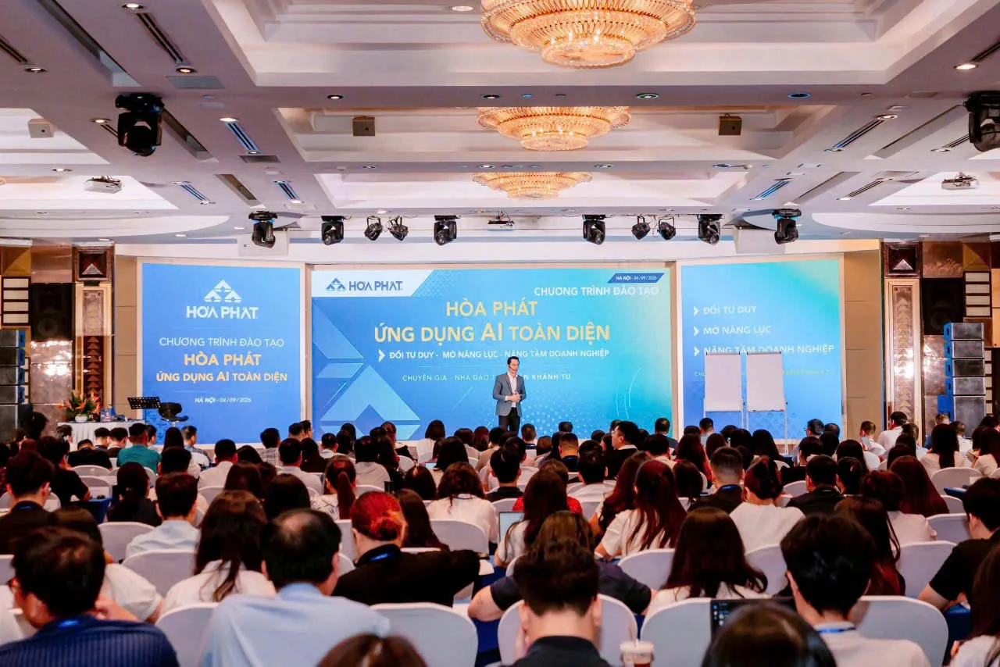
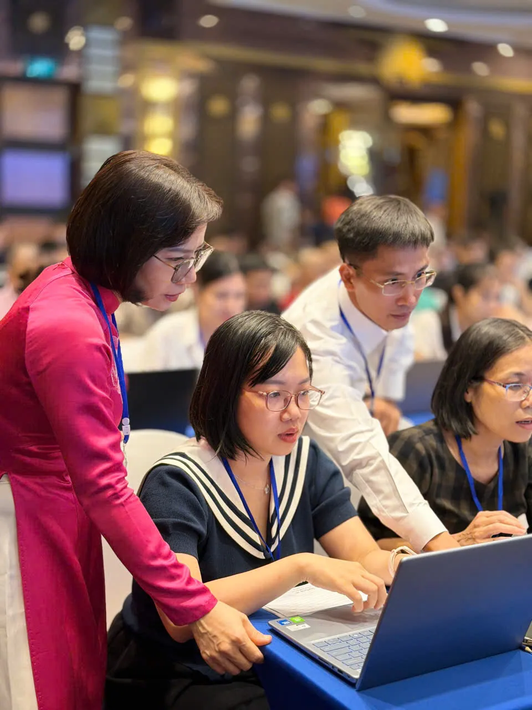
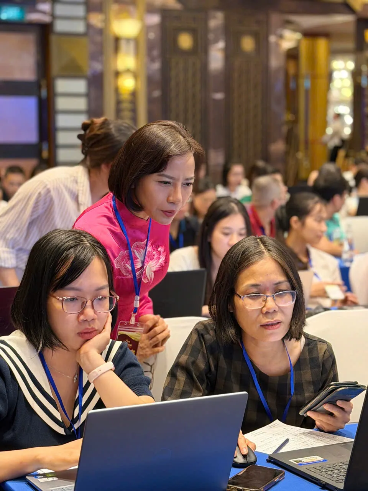
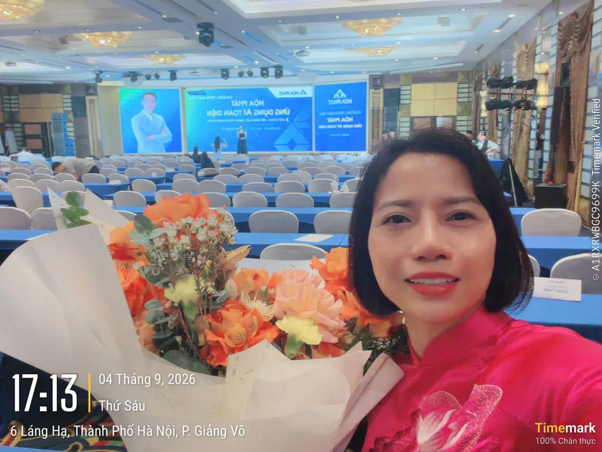
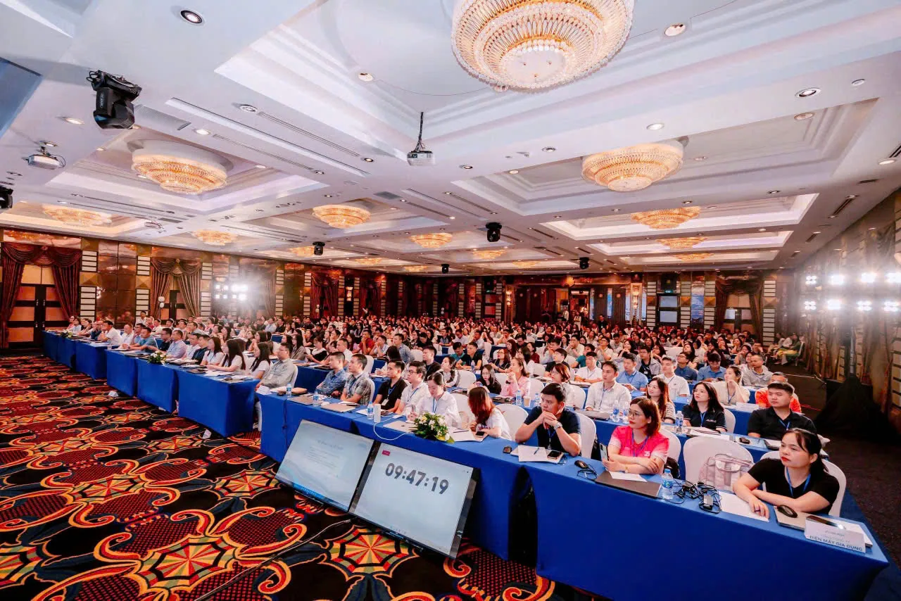
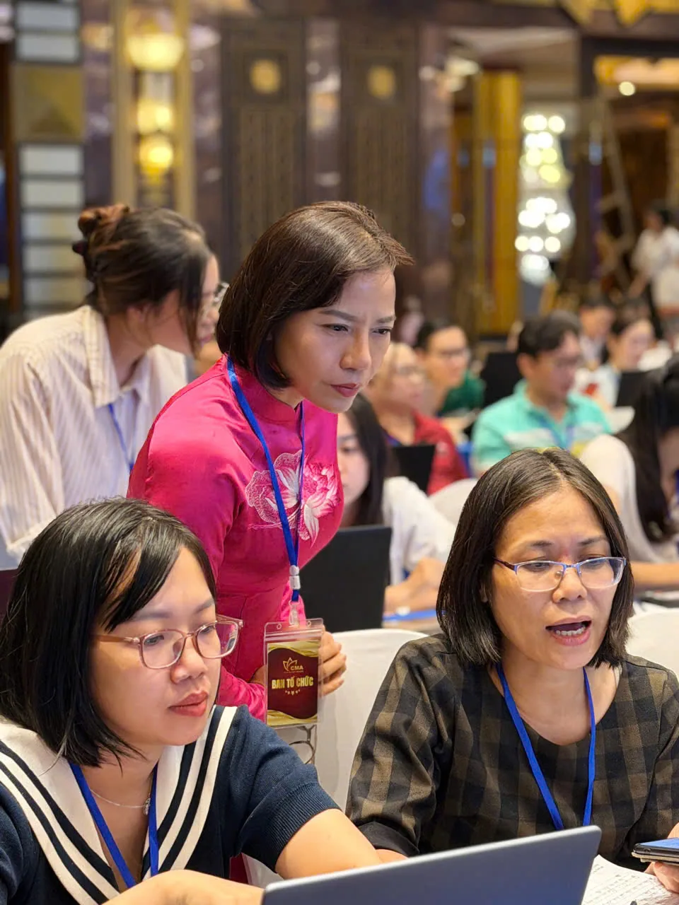
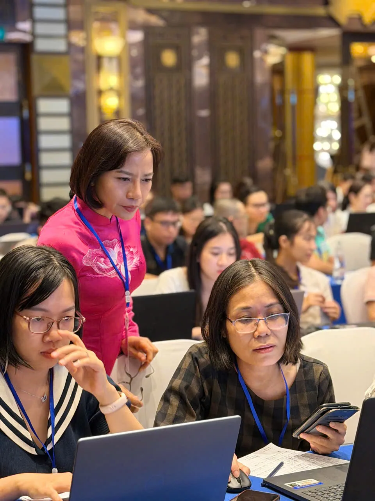
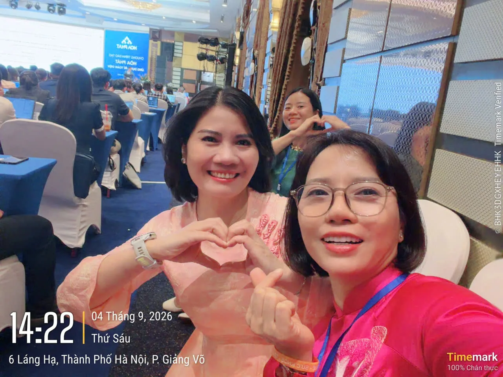
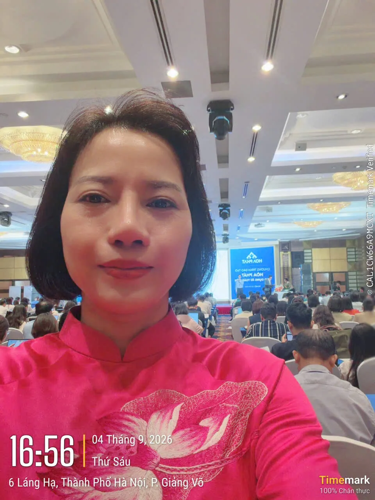
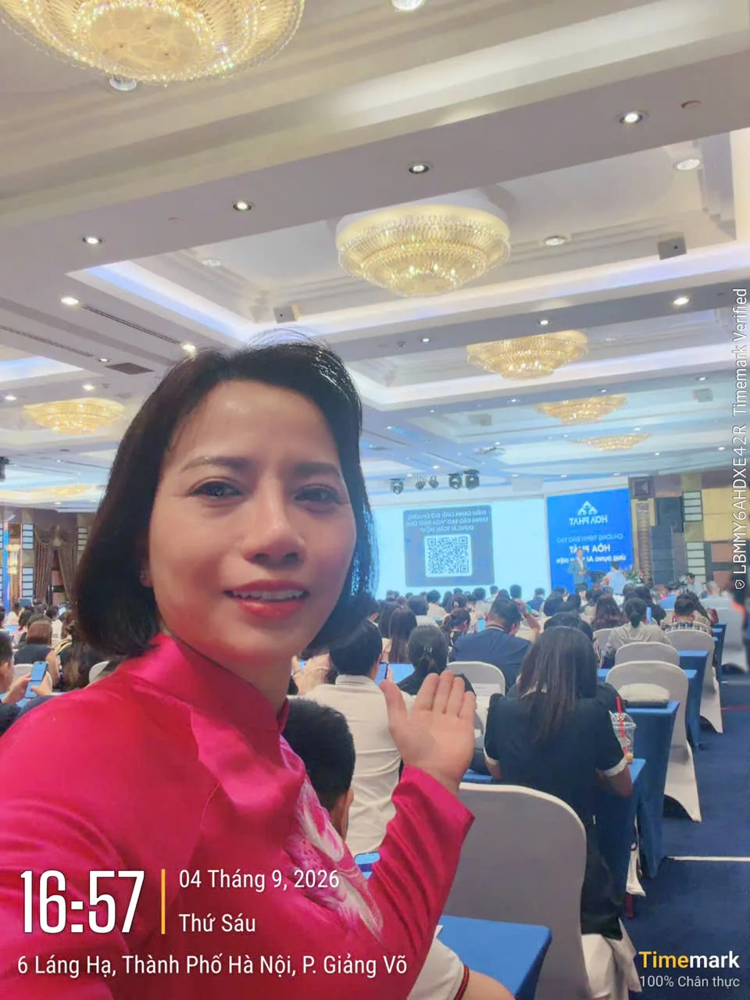

{kind=link}
{kind=link}
{kind=link}
{kind=link}
{kind=link}
{kind=link}
{kind=link}
{kind=link}
{kind=link}
{kind=link}
{kind=link}
{kind=link}
{kind=link}
{kind=link}
{kind=link}
{kind=link}
{kind=link}
{kind=link}
Làm chủ AI theo đúng chuyên môn
⚠ Vấn đề
Bạn không cần học tất cả. Bạn chỉ cần học đúng thứ mình cần.
✦ Hướng ứng dụng
Xây dựng hệ thống prompt, quy trình và trợ lý AI được thiết kế riêng cho công việc và lĩnh vực của bạn.
Chuyên gia đào tạo & Ứng dụng AI
Phạm Thanh Nhuệ - Chuyên gia đào tạo & Ứng dụng AI. Các lĩnh vực chuyên môn gồm tư duy, sáng tạo, quản trị tri thức cá nhân và tự động hóa quy trình làm việc.
Bắt đầu từ nhu cầu của bạn
Để lại thông tin và điều bạn đang quan tâm. Phạm Thanh Nhuệ sẽ trao đổi cùng bạn về hướng học tập và ứng dụng AI trong công việc.
Chỉ cần một vài thông tin để bắt đầu trao đổi.
Hoạt động & sự kiện
Những hình ảnh hoạt động của Phạm Thanh Nhuệ tại chương trình của Tập đoàn Hòa Phát ngày 04/09 ở Hà Nội: cùng học viên trao đổi, thực hành và khám phá cách ứng dụng AI.











Khoảnh khắc sự kiện
Xem thêm video chị Nhuệ ghi lại trong chương trình.
Trao đổi nhu cầu đào tạo AI ↗01 / Lĩnh vực chuyên môn
Học AI không chỉ là biết thêm vài công cụ hay vài câu prompt. Ứng dụng AI cần gắn với công việc, chuyên môn và quy trình thực tế để tạo ra một hệ thống làm việc hiệu quả hơn.
⚠ Vấn đề
Bạn không cần học tất cả. Bạn chỉ cần học đúng thứ mình cần.
✦ Hướng ứng dụng
Xây dựng hệ thống prompt, quy trình và trợ lý AI được thiết kế riêng cho công việc và lĩnh vực của bạn.
⚠ Vấn đề
Biến kho kiến thức và dữ liệu cá nhân thành tài sản có thể khai thác.
✦ Hướng ứng dụng
Thiết lập hệ thống lưu trữ, truy vấn và tổng hợp tri thức bằng AI, giúp bạn tìm kiếm và sử dụng thông tin nhanh chóng hơn.
⚠ Vấn đề
Giảm thời gian cho những công việc lặp lại mỗi ngày.
✦ Hướng ứng dụng
Thiết kế các workflow và AI Agent để tự động hóa những tác vụ như tổng hợp thông tin, xử lý dữ liệu, báo cáo và quản lý công việc.
02 / Cách tiếp cận
Không học lan man. Không chạy theo công cụ. Mỗi bước đều gắn trực tiếp với công việc và mục tiêu thực tế của bạn.
Liên hệ ↗Phân tích công việc, thói quen và mục tiêu hiện tại. Xác định điểm nghẽn và cơ hội ứng dụng AI. Đặt mục tiêu rõ ràng cho hệ thống cá nhân.
Lựa chọn mô hình và công cụ phù hợp. Xây dựng hệ thống AI theo đúng chuyên môn. Tối ưu quy trình để làm việc nhanh và hiệu quả hơn.
Triển khai AI trực tiếp trên công việc thực tế. Thực hành trên tình huống cụ thể. Biến kiến thức thành năng lực có thể sử dụng ngay.
Bàn giao hệ thống và thư viện prompt cá nhân. Hỗ trợ tối ưu trong quá trình vận hành thực tế. Đồng hành để hệ thống ngày càng hoàn thiện.
03 / AI Tech-Stack
Không phụ thuộc vào một công cụ duy nhất. Bạn được hướng dẫn cách kết hợp AI, dữ liệu và tự động hóa để tạo thành một hệ thống làm việc thống nhất.
AI hỗ trợ tư duy, phân tích, nghiên cứu và tạo nội dung chuyên sâu.
Biến tài liệu và kinh nghiệm cá nhân thành một hệ thống tri thức có thể truy xuất và khai thác.
Kết nối các công cụ và tự động hóa những quy trình lặp lại trong công việc.
Ứng dụng AI để tạo hình ảnh, âm thanh và video chuyên nghiệp với thời gian ngắn hơn.
Góc nhìn chuyên môn
Phạm Thanh Nhuệ chia sẻ cách tiếp cận AI gắn với công việc: hiểu công cụ, chọn cách học phù hợp và xây dựng năng lực thực hành.
Bắt đầu từ một vấn đề cụ thể trong công việc. Khi tìm hiểu công cụ mới, hãy đọc tài liệu chính thức, thử trên dữ liệu mẫu và kiểm tra kết quả trước khi đưa vào quy trình thực tế.
Ưu tiên khoá học AI có mục tiêu rõ ràng, bài tập sát chuyên môn và hướng dẫn kiểm chứng đầu ra. Một sản phẩm thực hành hữu ích cho công việc có giá trị hơn việc chỉ ghi nhớ danh sách công cụ.
Cố vấn AI bắt đầu từ việc hiểu mục tiêu, nguồn dữ liệu và cách bạn làm việc. Từ đó, xác định nhiệm vụ AI có thể hỗ trợ, phần cần con người kiểm tra và tiêu chí đánh giá hiệu quả.
“Tôi giúp bạn xây dựng hệ thống AI riêng cho công việc của bạn.”
PHẠM THANH NHUỆ
04 / Liên hệ
Chuyên gia đào tạo & Ứng dụng AI

Tư duy · Tri thức · Sáng tạo
05 / Trải nghiệm cá nhân
Có những chuyến đi không chỉ đưa ta đến một vùng đất mới, mà còn đưa ta trở về gặp lại chính mình.
Kết nối & học tập
Gửi nhu cầu học tập, trao đổi về ứng dụng AI hoặc đề xuất một lịch hẹn với Phạm Thanh Nhuệ.
Chia sẻ mục tiêu học AI và nhận thông tin phù hợp với nhu cầu.
Gửi thông tin ↗02 / Giải đápTrao đổi câu hỏi về học tập, công cụ và ứng dụng AI trong công việc.
Gửi câu hỏi ↗03 / Cá nhân & đội ngũChia sẻ bài toán cụ thể của cá nhân hoặc nhu cầu đào tạo cho đội ngũ.
Trao đổi nhu cầu ↗04 / Lịch hẹnĐề xuất thời gian và kênh liên hệ. Lịch hẹn được chốt sau khi xác nhận.
Chọn thời gian ↗Thông tin trước khi kết nối
Bạn có thể gửi nhu cầu học tập hoặc một công việc muốn ứng dụng AI. Phạm Thanh Nhuệ sẽ trao đổi để xác định hướng tiếp cận phù hợp.
Biểu mẫu chỉ tiếp nhận nhu cầu. Nội dung, lịch và chi phí nếu có cần được hai bên xác nhận riêng trước khi thanh toán.
Thời gian bạn chọn là đề xuất. Vui lòng chờ xác nhận qua kênh liên hệ đã cung cấp trước khi tham gia.
Bạn có thể gọi 0972 739 468 hoặc trao đổi qua Zalo.